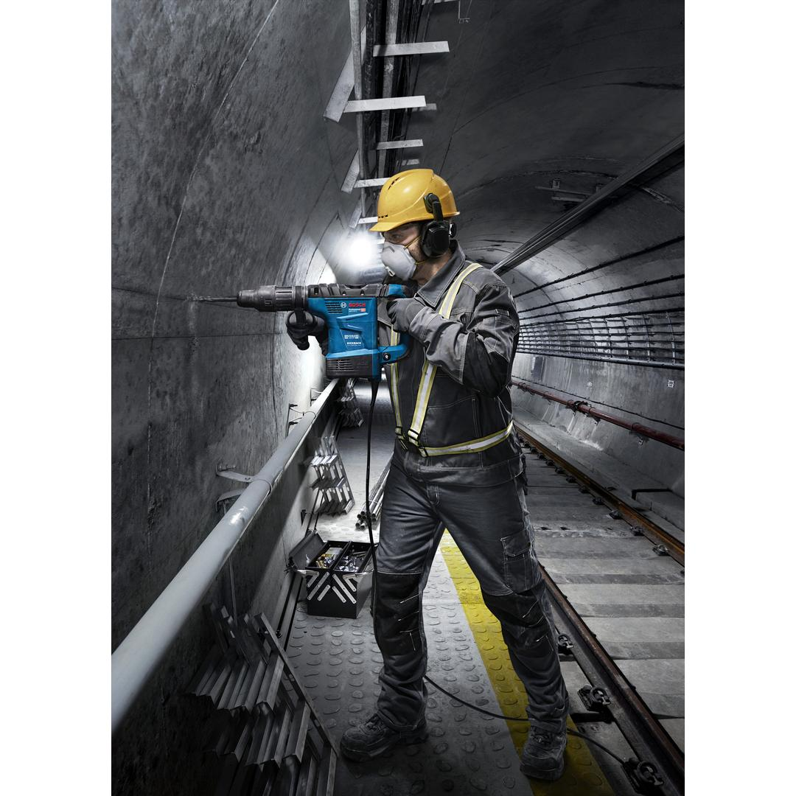
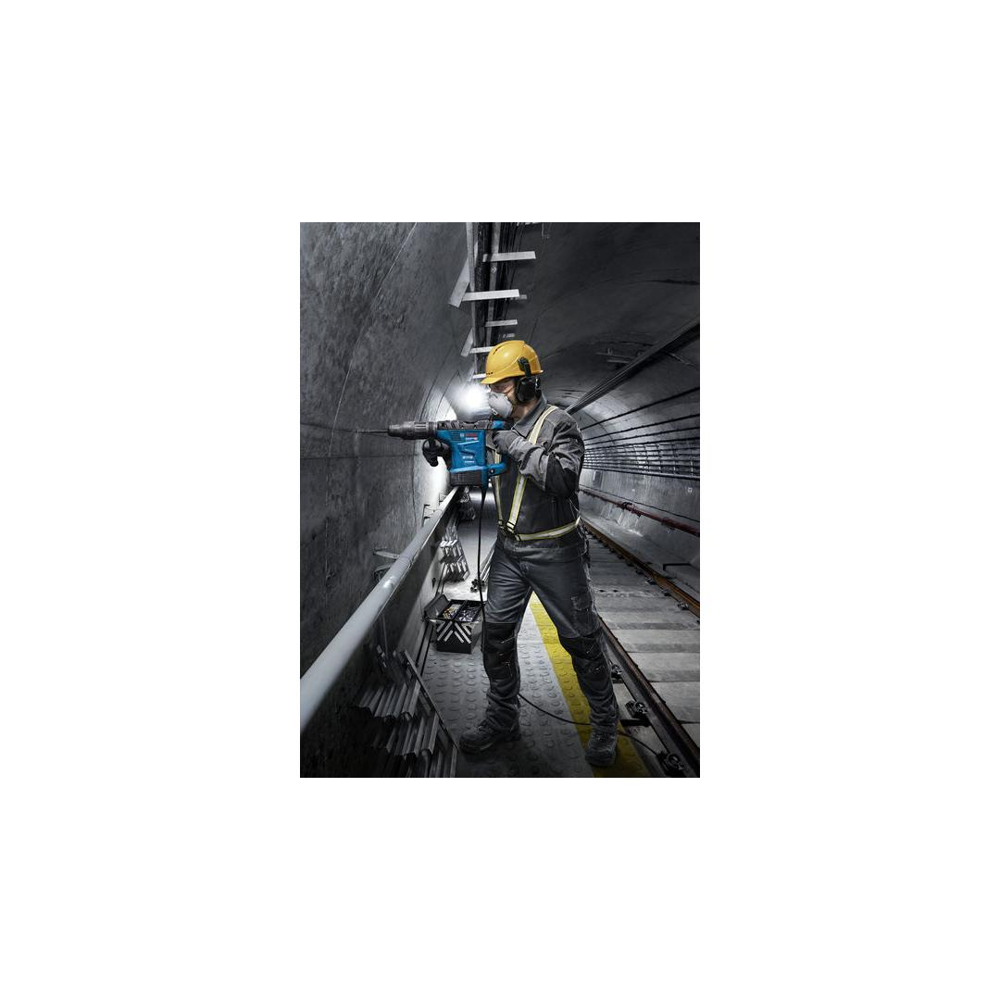
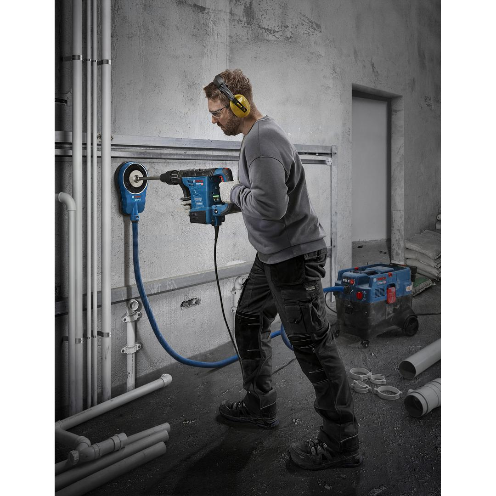
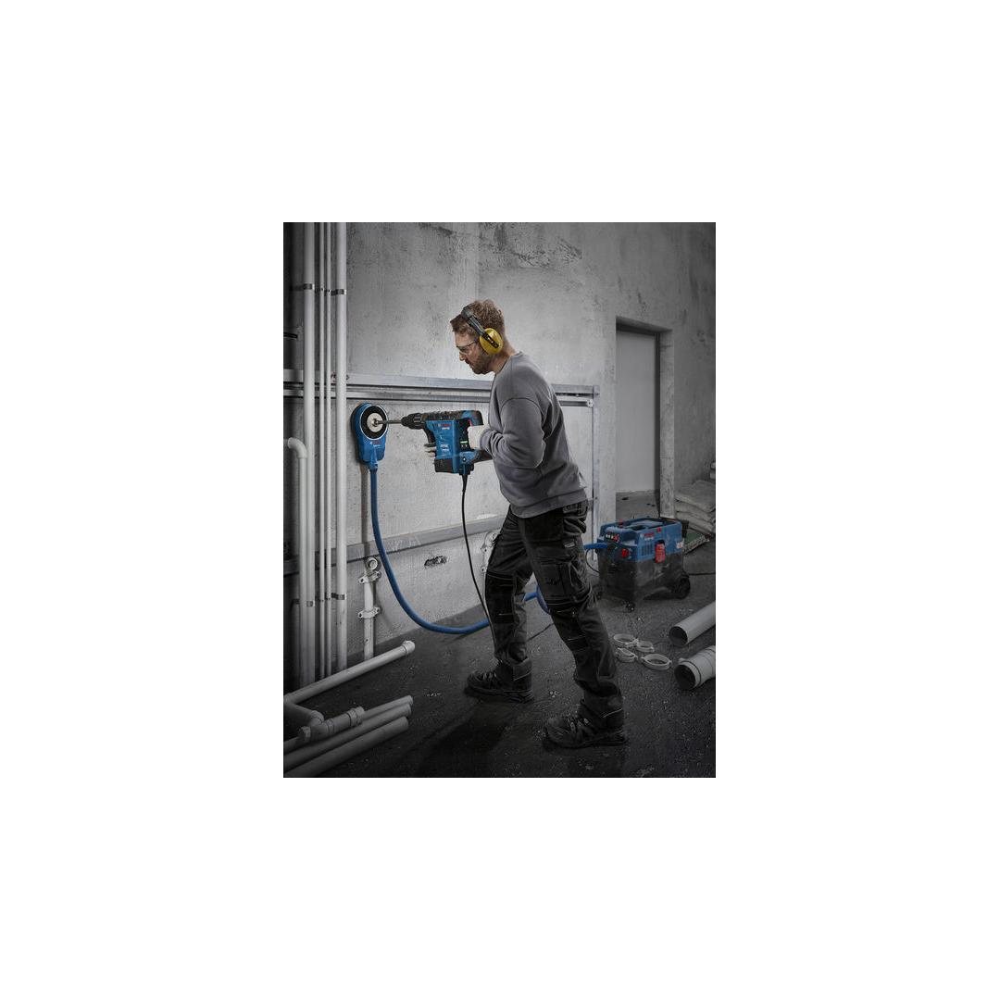
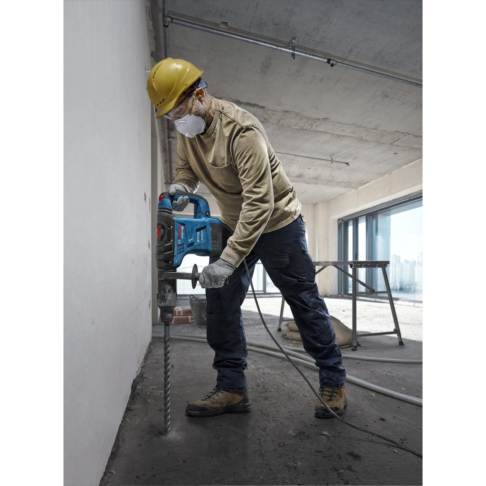
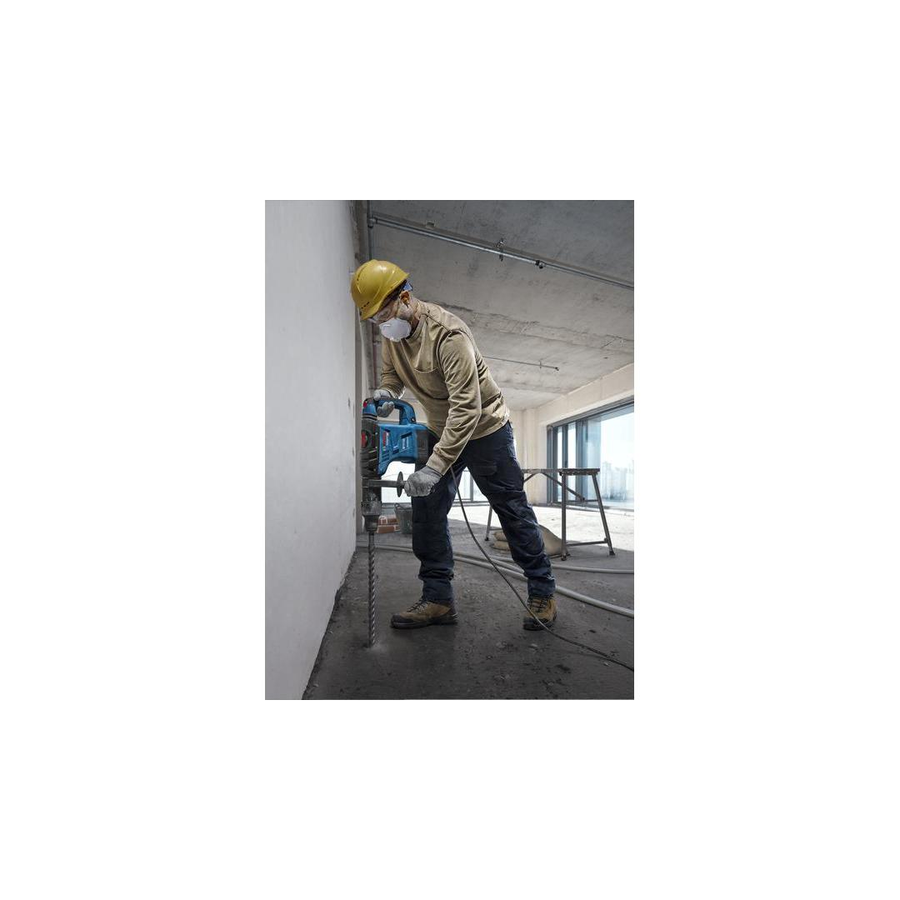
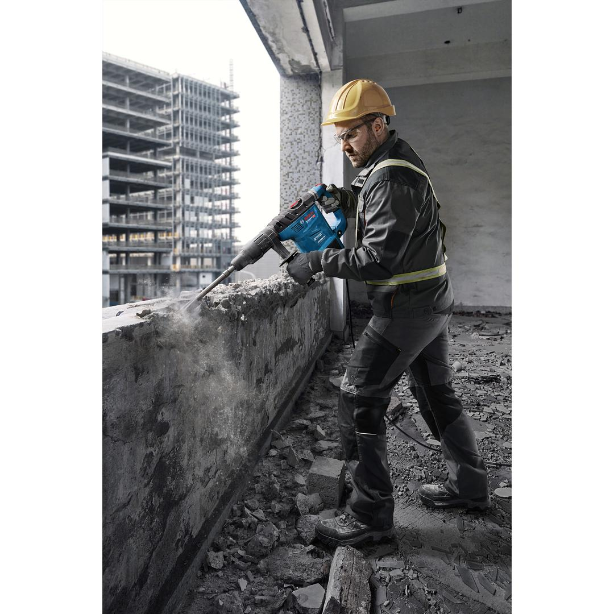
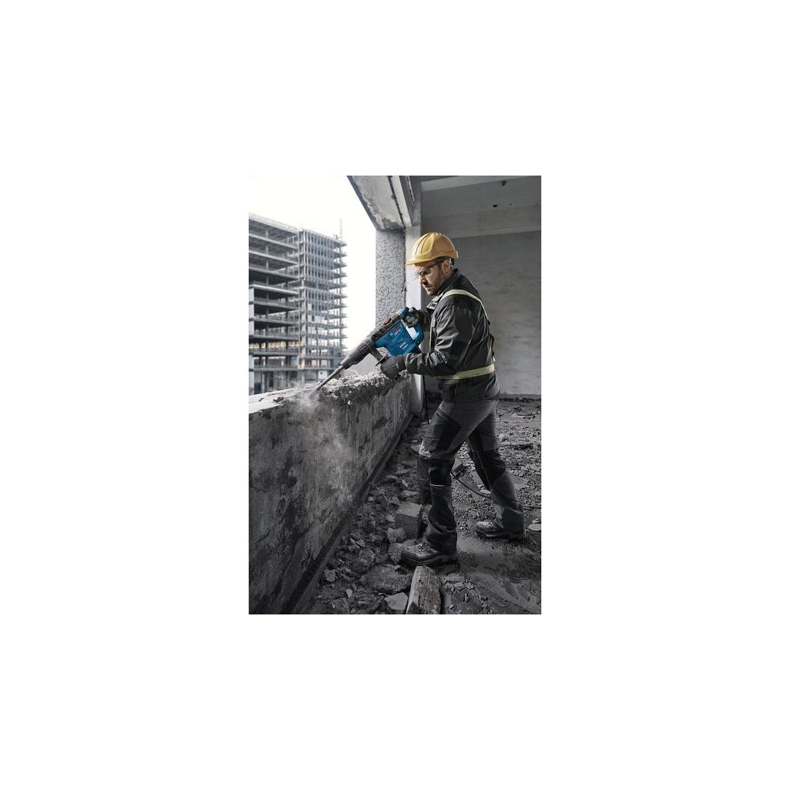
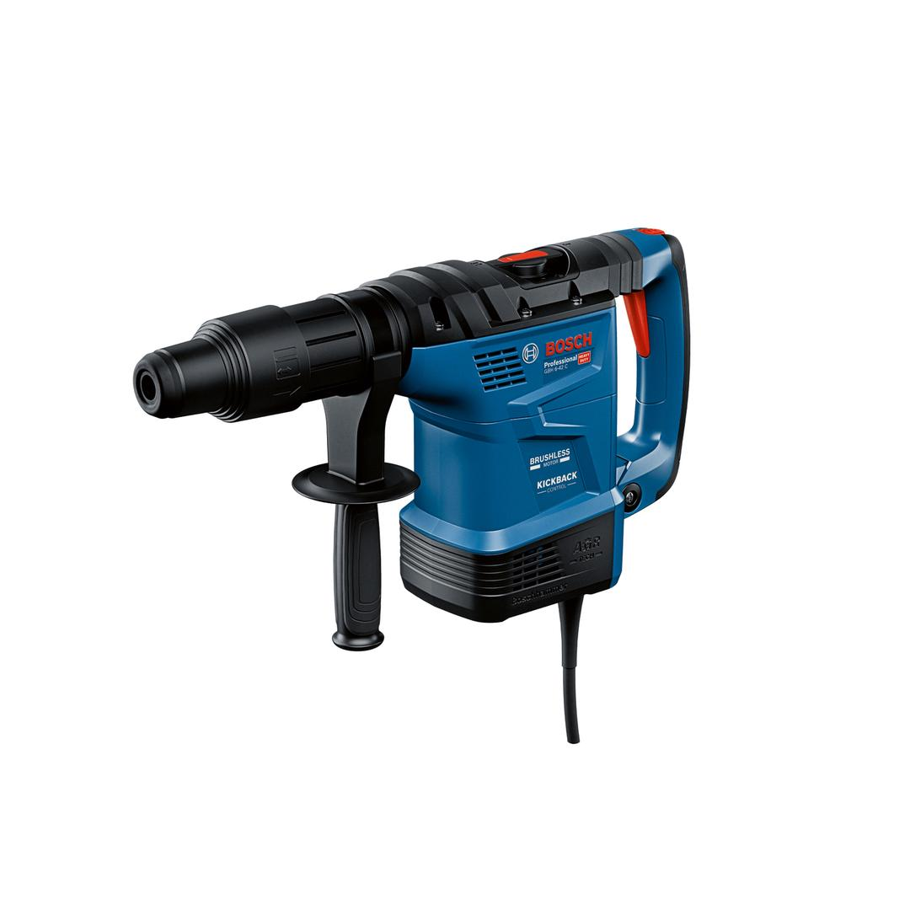
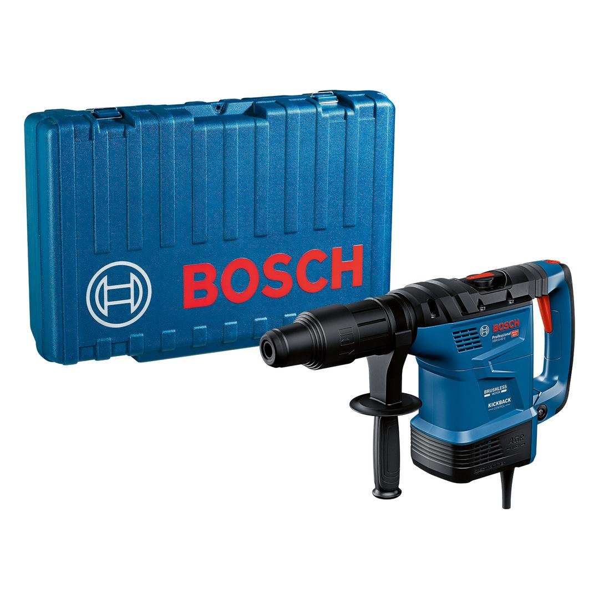

06112780K0










| Noise level |
The A-rated noise level of the power tool is typically as follows: Sound pressure level 107 dB(A); Sound power level 99 dB(A). Uncertainty K= 3 dB. |
| Voltage, electrical |
230 V |
| Rated input power |
1,300 W |
| Impact energy |
9 J |
| Impact rate at rated speed |
3,050 – 3,150 bpm |
| Weight |
7.700 kg |
| Tool dimensions (width) |
122 mm |
| Tool dimensions (length) |
500 mm |
| Tool dimensions (height) |
278 mm |
| Tool holder |
SDS max |
| Drilling dia. concrete, hammer drill bits |
14 – 42 mm |
| Opt. appl. range concrete, hammer drill bits |
18 – 32 mm |
| Drilling dia. concrete, breakthrough drill bits |
55 mm |
| Drilling diameter in concrete with core cutters |
100 mm |
Top-level protection for your heavy-duty drilling and chiselling needs
Performing heavy-duty drilling and chiselling on concrete can be exhausting and harbours risks caused by tools jamming, losing control of the tool, or exposure to excessive vibrations. With our GBH 6-42C Professional heavy-duty, 2-in1 rotary hammer you get endurance, productivity and top-level protection from arm injuries and fatigue while working because it’s equipped with advanced solutions like a safety clutch, KickBack Control, and Vibration Control. The smart-tool PRO360 app has a first-in-class user interface with real-time tool status for preventive maintenance and easy selection of the ideal working mode. Its brushless motor and auto-gear rotation system keep you productive by reducing maintenance and tool downtimes.
The GBH 6-42 C Professional is an SDS max, all-rounder rotary hammer ideal for drilling and chiselling tough materials such as concrete, stone, and masonry. It operates in all directions with a max. drilling diameter of up to 42 mm.